Where it started
In 2021, while at IIT Guwahati, I redesigned MyAnimeList’s mobile app as a personal project. MyAnimeList is one of the biggest anime trackers around, and its app hadn’t really changed in years. I redid the core screens (tracking, profiles and discovery) in XD and Figma, animated them in After Effects, and published it on Behance in October 2021.
It picked up 1.9K views and 125 appreciations there. One comment that December read: “I hope to see this come to life.”
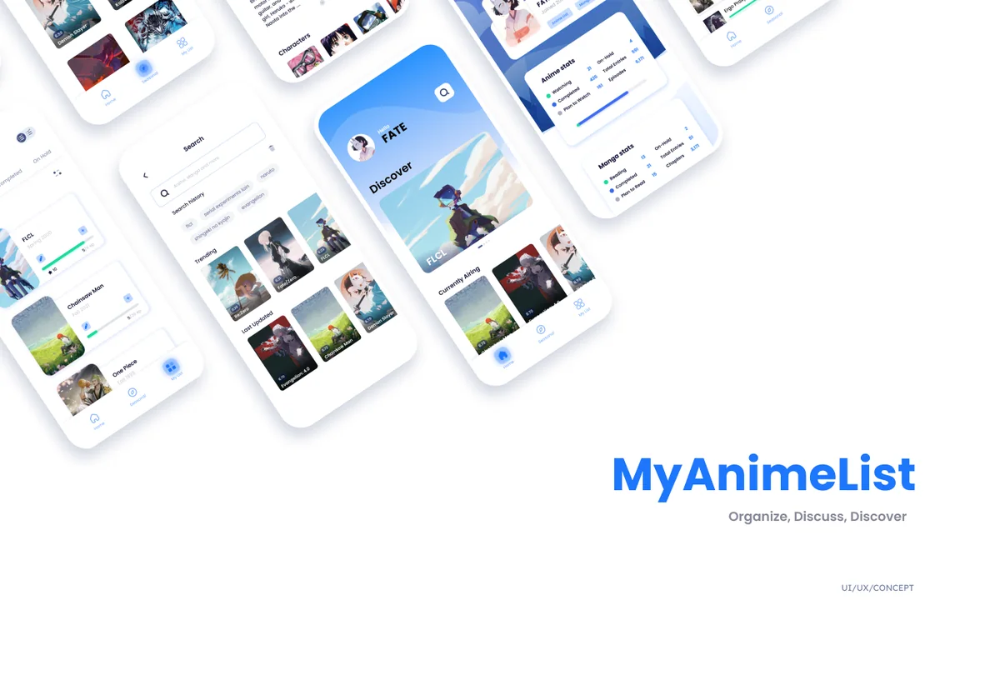
From concept to company
In 2022, Kyle Kelly came across the redesign and got in touch. He wanted to build a standalone anime social app on it and asked for my permission and the screens. I said yes, handed over the concept and the design files, we talked the product through, and I came on as co-founder.
Kyle ran engineering through 2023 while I owned the design, and Ani! launched on iOS and Android in 2024.
- 2021My MyAnimeList redesign goes up on Behance
- 2022Kyle gets in touch; I come on as co-founder
- 2023Kyle’s team builds the app from my design
- 2024Ani! launches on the App Store and Google Play
My part
Ani! is my idea and my design. Kyle and I co-founded it: he ran engineering, and I owned the product’s design.
- The idea. A social app for anime fans, grown out of my MyAnimeList redesign, with the tracker, profiles and discovery at its core.
- The design. The founding design the app was built from. The tracker that shipped is my 2021 Discover screen, layout and all.
- The product, with Kyle. Shaping the first version together: watchlist tracking, fan art posting, real-time chatrooms and the social feed.
- Through the build. Design reviews with Kyle while his team built it in 2023, up to the launch on both stores in 2024.
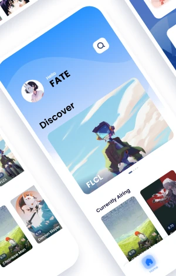
2021discover, in my myanimelist redesign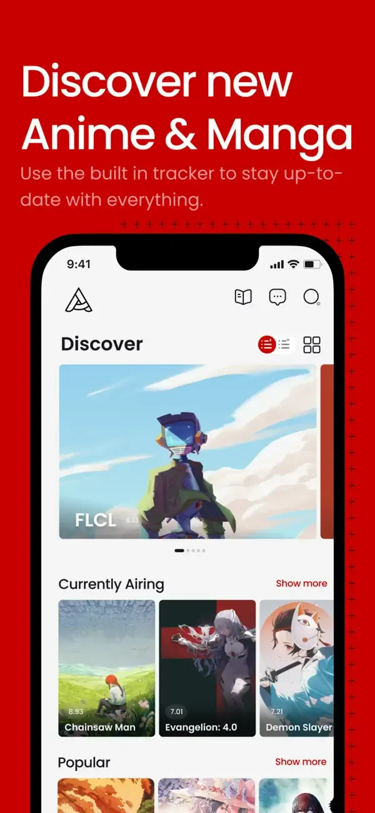
2024discover, as ani! shipped it
Inside the app
This is Ani! rebuilt in code, with AI tools, from the design file and the App Store screens. Each step below plays on the phone as you reach it. Tap the phone whenever you want to drive it yourself.
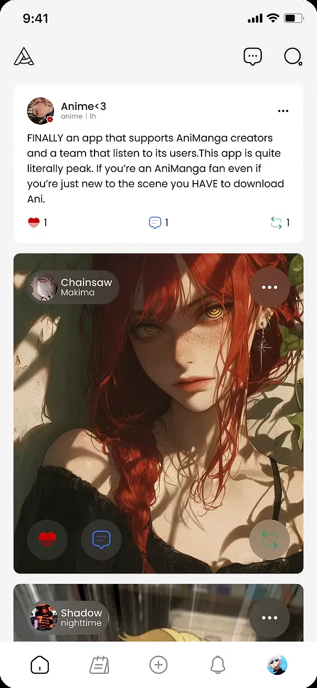
-
01 · home
Art gets the whole card
Fan art runs edge to edge, with the poster’s name and the buttons floating on the art. Text posts get a plain card. The shipped feed kept the same split.
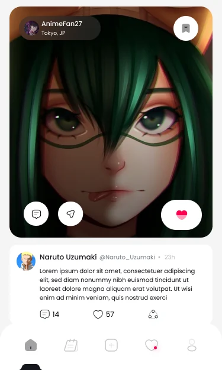
design file- shippedhome
-
02 · comments
Comments show the creator
Open the comments on a post and the creator’s own replies are tagged, a comment they liked says so, and a flagged one is marked where it sits.
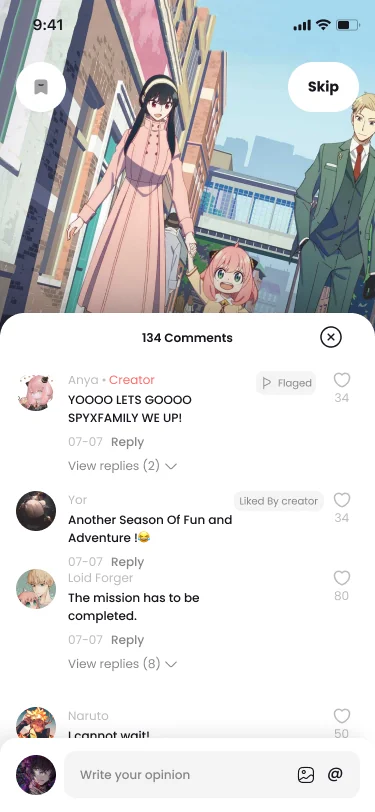
design file
-
03 · news
News lives inside the app
Trending stories up top, articles by anime, manga and games below, and every story opens straight into its comments. The store listing pitched it as “always in the loop”.
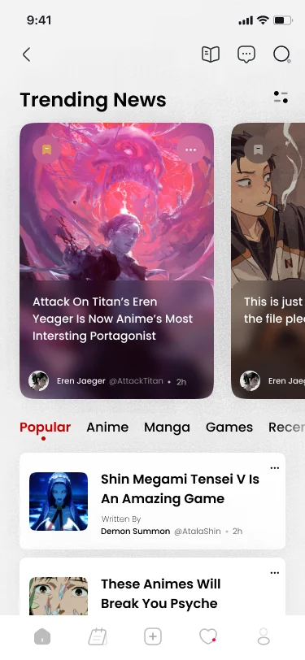
design file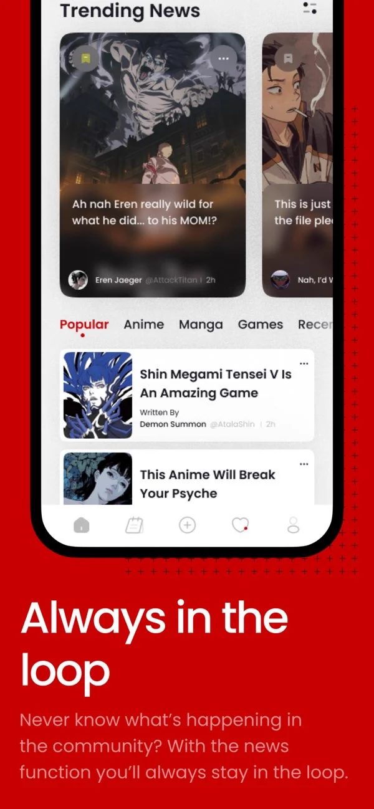
shippedapp store
-
04 · tracker
The tracker came from my redesign
Discover leads with a featured show, then Currently Airing and Popular; tap a poster to add it to Watching, or switch to a grid. It’s the Discover screen from my 2021 MyAnimeList redesign, carried into Ani!
- 2021my redesign
- shippedapp store
-
05 · inbox
DMs and chatrooms share one inbox
Messages and Chatroom are two tabs, but a room you’ve joined also lands in Messages, in time order with your DMs. Rooms keep their banner art so a group never reads as a person, and both carry unread counts. The shipped app kept it as designed.
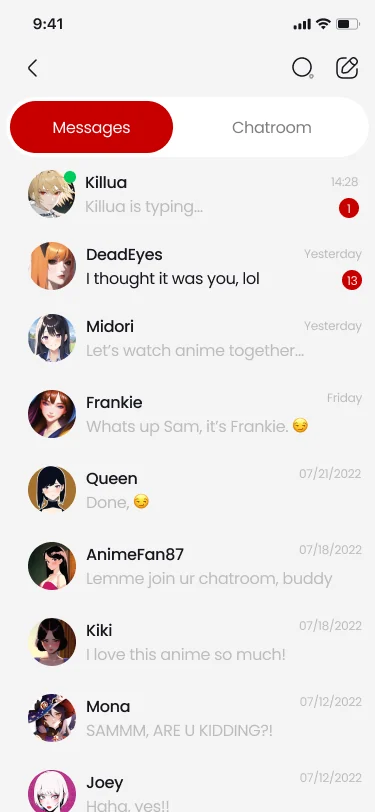
dms only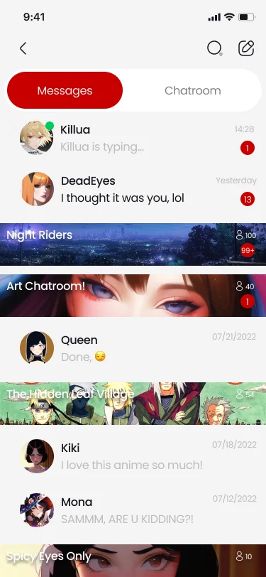
with joined rooms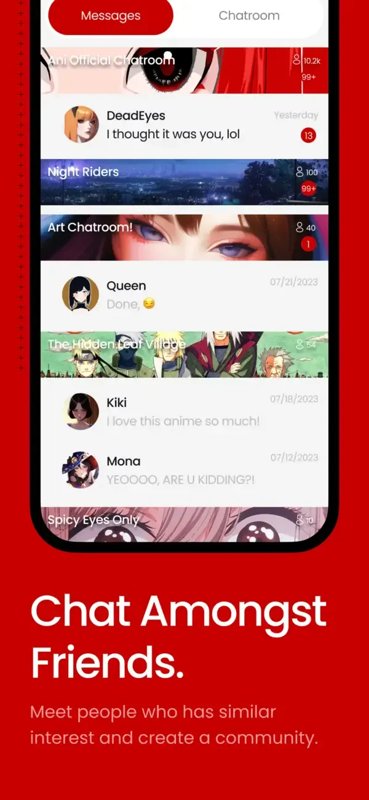
shippedapp store
-
06 · chatrooms
Rules before you join
A room you haven’t joined opens as a card first: who made it, how many are in it and its rules, with Join next to Cancel. Join, say hi, and the room is in your inbox.
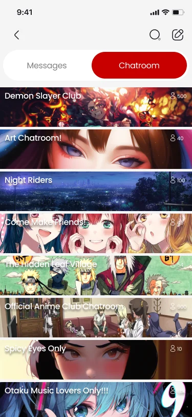
every room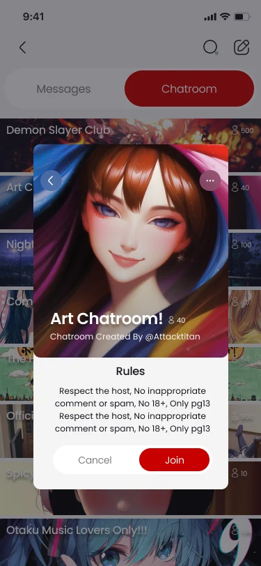
the rules card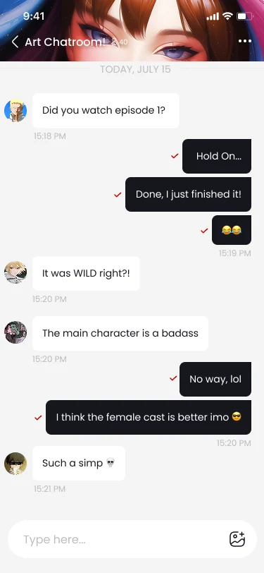
inside
-
07 · messages
Chat that feels live
Typing shows in the header and in the inbox, pictures group into a grid, and the send button only appears once there’s something to send.
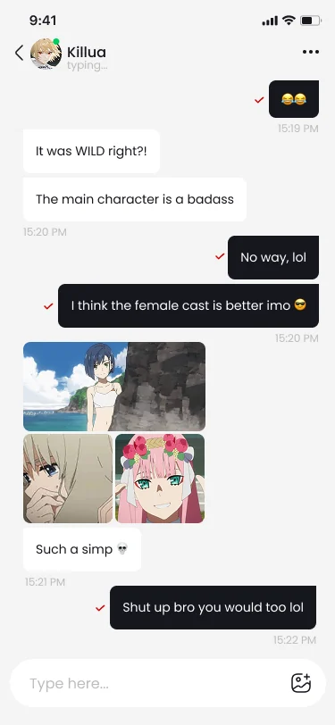
pictures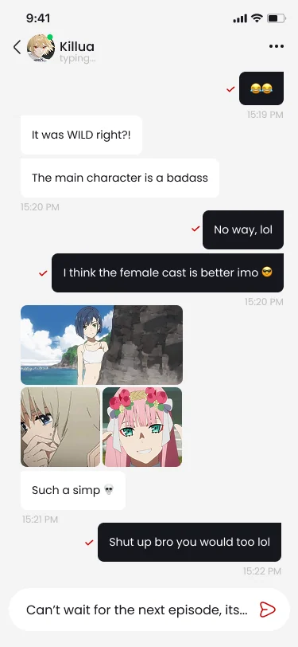
send appears
-
08 · new account
Empty states with a voice
An empty inbox says “No Messages?💀 Lol, I think you need people to talk to.” A new chat says “Don’t be shy!” The app talks the way its users do.
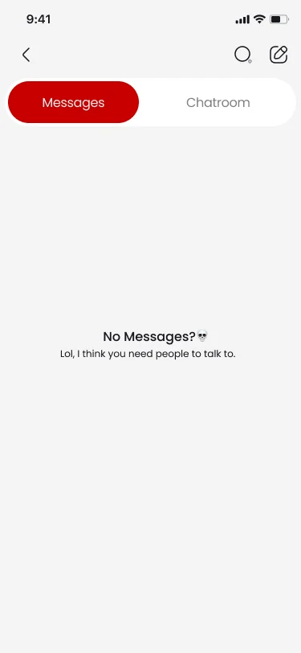
no messages yet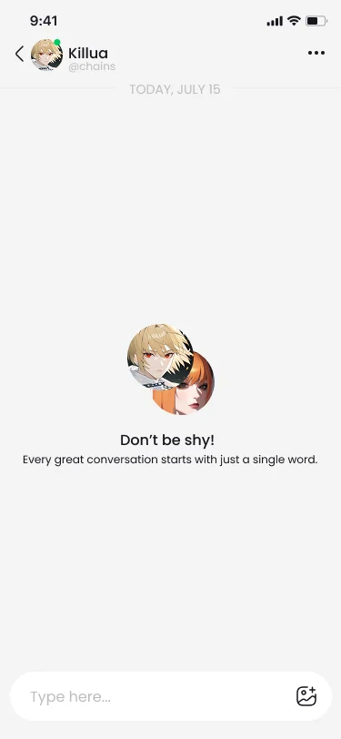
a new chat
-
09 · dark mode
Dark mode, as shipped
The launch build added a dark theme beside the light one, and the store listing led with it. The switch under the phone flips the rebuild the same way, on every screen.
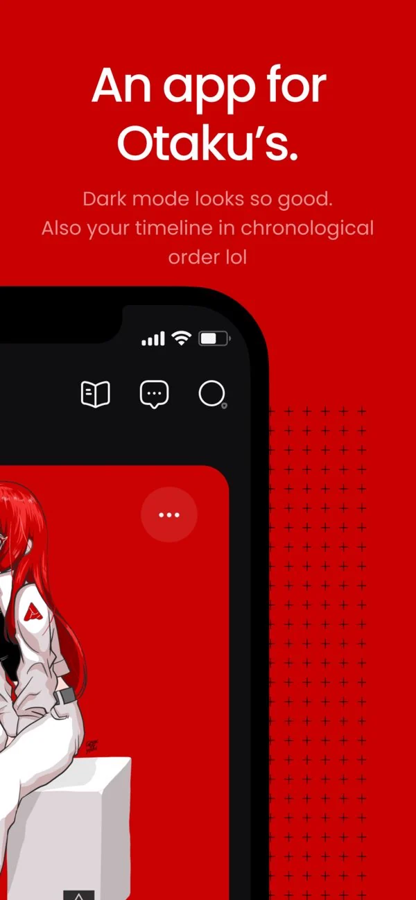
shippedapp store
swipe the cards — each one plays on the phone
What shipped
Ani! went out on the App Store and Google Play in 2024, with a dark mode beside the light one and Ani’s mascot, drawn by the Japanese illustrator 44 (@noblackstars).
- Tracker — Discover, Currently Airing and Popular, and a watchlist of what you’re following
- Fan art and posts — art posts, text posts, stories, likes, comments and reposts
- News — trending stories and articles, sorted by anime, manga and games
- Chat — DMs, and chatrooms anyone can start, with their own rules
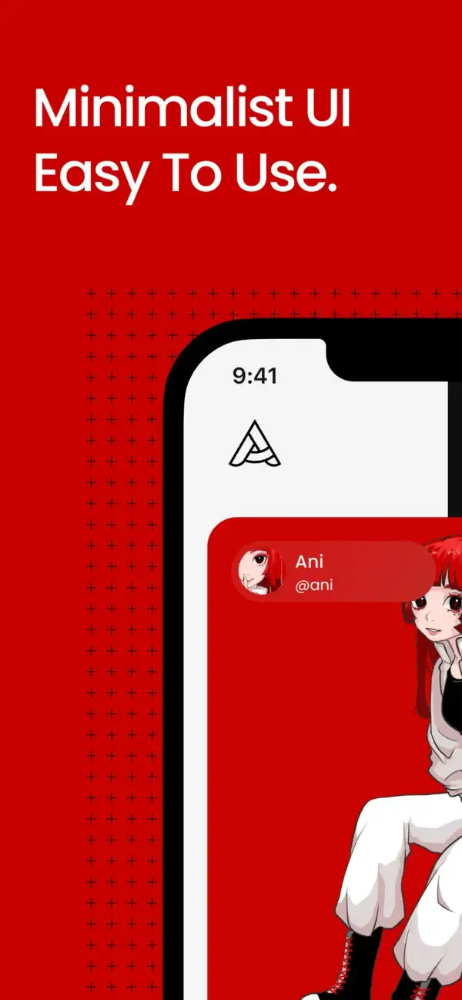
minimalist ui- dark mode
- news
- the tracker
- chat